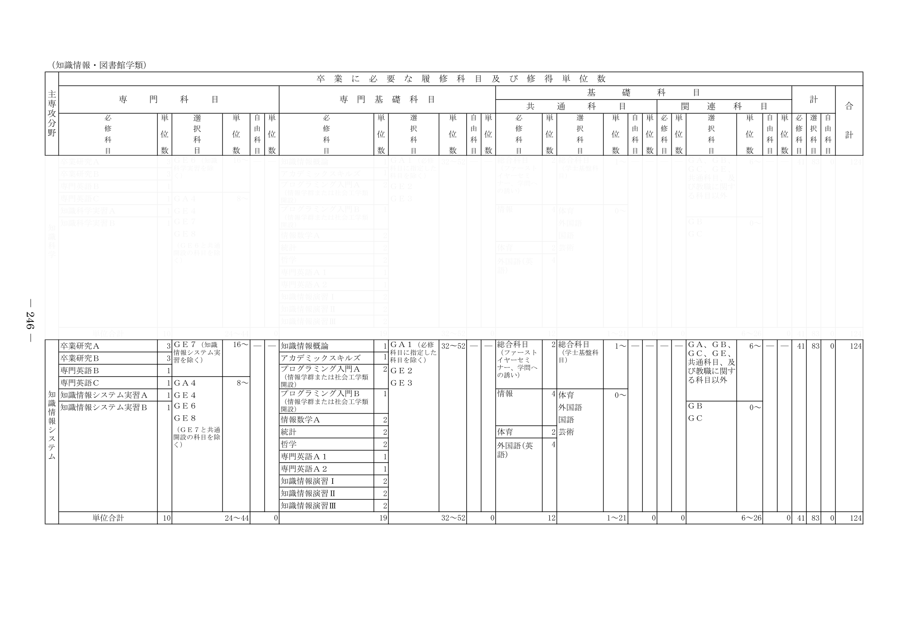

取らない授業
マスを選択してください
このマスに該当する授業がありません
| 科目 | 単位 | 学期 | 時限 | 標準 履修 年次 |
|---|
取るかもしれない授業一覧をTWINSにまとめて履修登録できます
取るかもしれない授業
ここに授業をドラッグ&ドロップ
ここに授業をドラッグ&ドロップ
| 科目 | 単位 | 学期 | 時限 | 標準 履修 年次 |
|---|
単位取得済みの授業
マスを選択してください
このマスに該当する授業がありません
| 科目 | 単位 | 学期 | 時限 | 標準 履修 年次 |
|---|